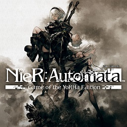

Nier Automata
Nier Automata is a story game about two androids that have to fight robots to save humanity. This is the most complex story that I have ever experienced. There are many themes and ideas Nier talks about. One that has stuck with me the most is how Nier covers Nihilism. Nier agrees that life is meaning but then will find meaning in the meaninglessness of life."Everything that lives is designed to end. They are perpetually trapped in a never-ending spiral of life and death. However, life is all about the struggle within this cycle.", Nier Automata.
